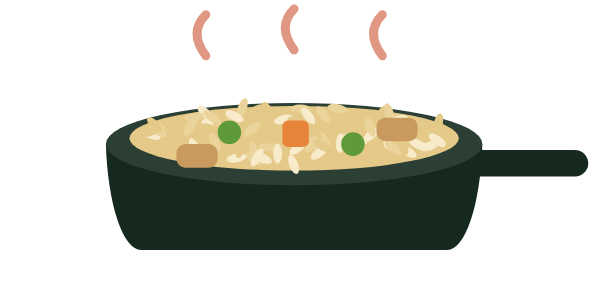
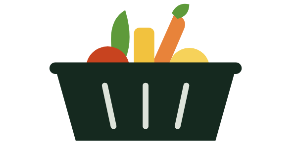

1The problem
Picking a meal is easy. Sizing it to you is not.
2Four agents work like one kitchen
ORDER chicken fried rice, active woman, maintaining
Estimates a day's burn and sets the budget.

THE CHEFMeal recommendationRules out conflicts, picks a recipe, sizes it.
Looks up each ingredient, labels estimates.

THE SHOPPERSupermarketMatches items to store or category prices.
3Results: three fixes, from 10 to 72 of 72
Plans meeting calorie and macro targets on the project's own offline benchmark of 72 requests. 11 are fallback meals.
4From body to meal target
The model scores R² 0.996 on exercise calories, but adds only 3–10% of the day.
5Hard limits first, then relevance
6Where the 694 kcal come from
Only 3 of 6 ingredients are estimates, but they include the biggest items.
7Architecture and tech stack
Live, public demo
Guided flow, run locally
Typed JSON, keys, rate limits
Local history, via SQLModel
MealPlanningService
8What it does not prove yet
9What comes next
NOW
Migrations, deployment, user accounts
NEXT
USDA benchmark, real exercise data, allergen tags
LATER
75–100 recipes, live prices, testing with people